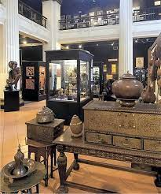
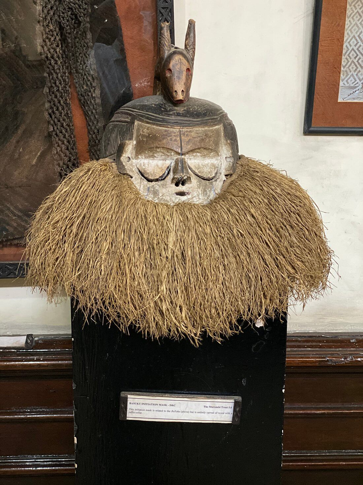
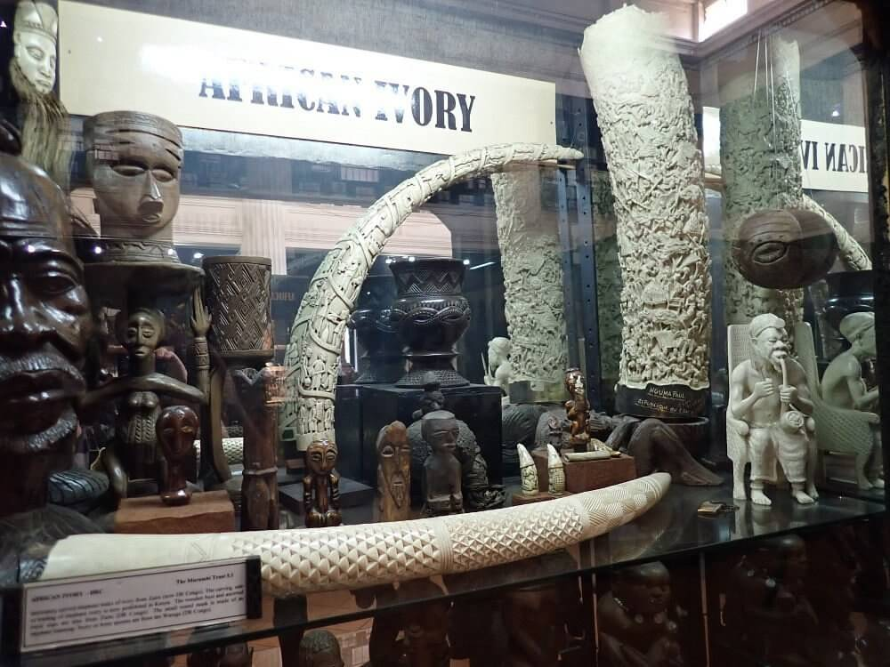
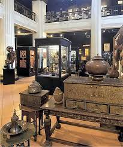
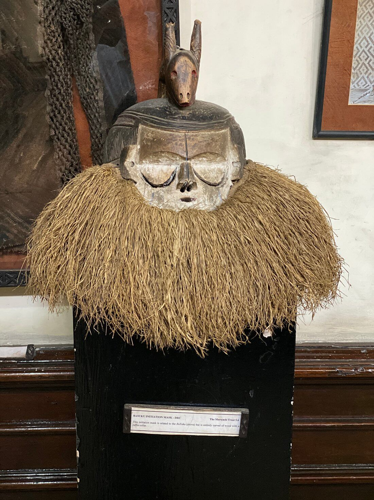
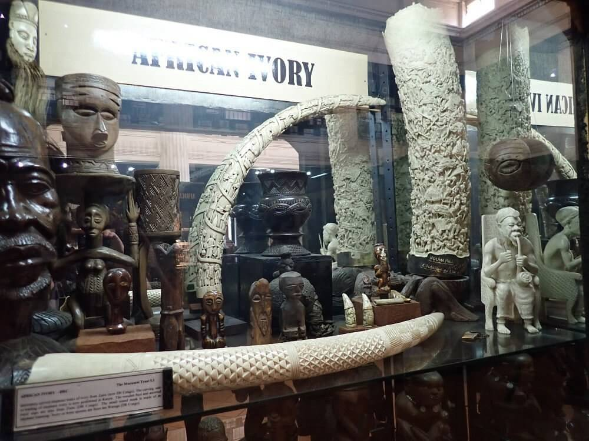

The Kenya National Archives was established in 1965 and it holds 40,000 volumes of public records and archives.
It is situated at the edge of the central business district in downtown Nairobi along Moi Avenue next to Ambassadeur Hotel. The archives look out on the landmark Hilton Hotel, while on the rear side is Tom Mboya street.
Its mission is to offer consultative records management services to the public service; acquire and preserve valuable public as well as private records as part of the national documentary heritage; and ensure timely accessibility of records and archives to users.
It was established by an Act of the Parliament of Kenya in 1965 and was placed under the office of the Vice President and the Minister of Home Affairs. It is currently under the office of the Vice-President and State Department for National Heritage and Culture. The Kenya National Archives building also houses the Murumbi Gallery which contains African artifacts that were collected in the 19th century.